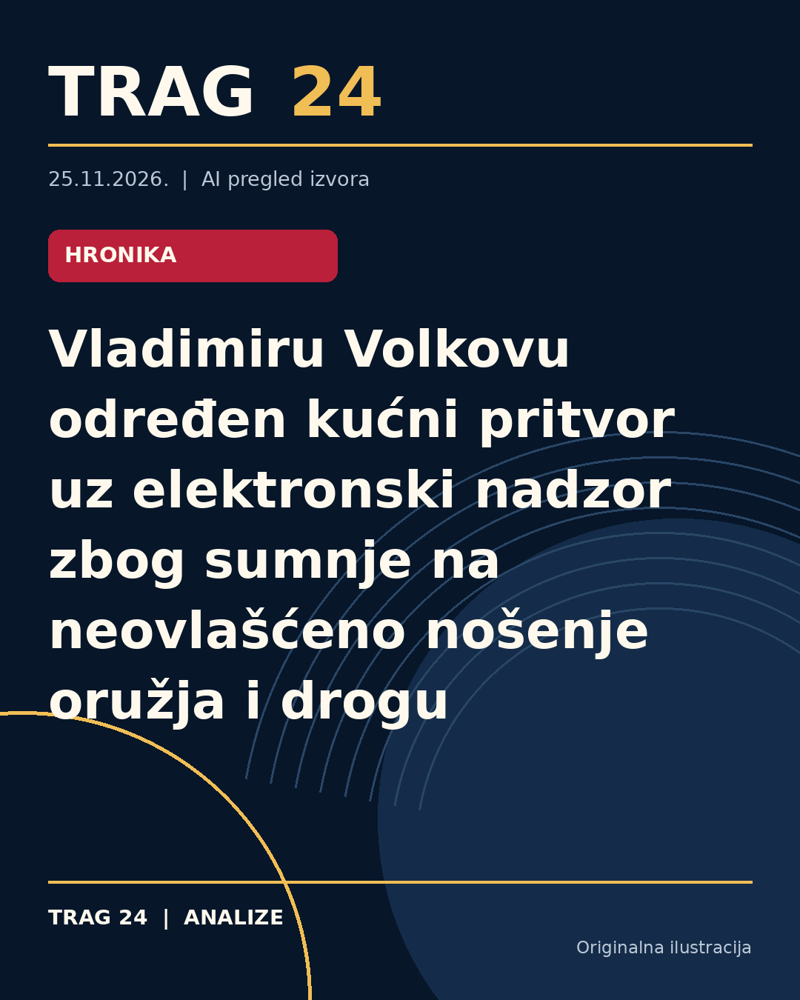

Vladimiru Volkovu određen kućni pritvor uz elektronski nadzor zbog sumnje na neovlašćeno nošenje oružja i drogu

ŠTA SE DOGODILO
Vladimir Volkov, bivši fudbaler Partizana, uhapšen je u Beogradu zbog sumnje da je 22. novembra neovlašćeno nosio vatreno oružje i municiju, kao i manju količinu droge MDMA. Uz njega u vozilu su bili Ana Đ. i Stevan R., koji su takođe bili osumnjičeni. Policija je prilikom zaustavljanja vozila pronašla pištolj marke "Glock" bez fabričkog broja sa okvirom i mecima. Volkovu je nakon saslušanja određen kućni pritvor sa nanogicom, odnosno elektronskim nadzorom, i on ne sme da napušta stan bez odobrenja suda.
HRONOLOGIJA
Incident se dogodio 22. novembra oko 8:20 časova u Dunavskoj ulici u Beogradu kada je policija zaustavila BMW X6 kojim je upravljao Stevan R. Volkov je bio na mestu suvozača, a Ana Đ. na zadnjem sedištu iza suvozača. Pronađeni su pištolj i municija, kao i jedna tableta MDMA koju je Volkov odbacio. Svi su saslušani u Višem javnom tužilaštvu u Beogradu, nakon čega je Volkovu određena mera zabrane napuštanja stana sa elektronskim nadzorom. Drugi osumnjičeni su pušteni iz pritvora.
ŠTA NAVODE IZVORI
Prema informacijama iz tri izvora, Viši sud u Beogradu je odlučio da se Volkovu odredi kućni pritvor sa nanogicom zbog postojanja osnovane sumnje da je počinio krivična dela neovlašćeno nošenje oružja i držanje droge za sopstvenu upotrebu. Tužilaštvo je predložilo pritvor ili alternativnu meru kućnog pritvora, a sud je prihvatio ovu drugu. Navodi se i da je policija policijskim službenicima zatekla pištolj bez fabričkog broja sa municijom u automobilu, kao i drogu koju je Volkov odbacio.
ŠTA JE POTVRĐENO
Potvrđeno je da je Volkov uhapšen po nalogu tužilaštva, da je saslušan zajedno sa ostalima, te da mu je određen kućni pritvor sa elektronskim nadzorom. Takođe je potvrđeno da su pronađeni nelegalno oružje i municija u vozilu kojim je upravljao drugi osumnjičeni, kao i da je Volkov posedovao manju količinu droge MDMA. Osumnjičenima je stavljeno na teret krivično delo neovlašćene proizvodnje, držanja, nošenja i prometa oružja i droge u saizvršilaštvu.
ŠTA NIJE POTVRĐENO
Iz dostupnih tekstova nema potvrde o daljim okolnostima incidenta, uključujući motiv, eventualne druge osobe uključenih u slučaj, niti je poznato da li su istraga i sudski postupci u toku završeni. Nema informacija o stanju ostalih osumnjičenih i eventualnim merama prema njima.
ŠTA OSTАJE OTVORENO: Ostaje nepoznato da li će protiv Vladimira Volkova, Ane Đ. i Stevana R. biti podignuta optužnica i kako će se dalje razvijati slučaj u pravosudnom sistemu. Takođe, nije poznato da li će se primeniti druge mere ili eventualna kazna. Ostaje otvoreno i pitanje posledica koje će ovaj slučaj imati na lične i profesionalne aktivnosti Vladimira Volkova.
Izvori
- https://informer.rs/hronika/vesti/1173219/vladimir-volkov-kucni-pritvor
- https://www.telegraf.rs/vesti/hronika/4439855-volkovu-odredjen-kucni-pritvor-sa-nanogicom-ne-sme-da-napusta-stan-bez-odobrenja-suda
- https://www.b92.net/info/hronika/288112/volkovu-odredjen-kucni-pritvor-sa-nanogicom-ne-sme-da-napusta-stan-bez-odobrenja-suda/vest
Ova analiza je pripremljena uz pomoć veštačke inteligencije na osnovu javno dostupnih izvora. Navodi izvora nisu nužno nezavisno potvrđeni.